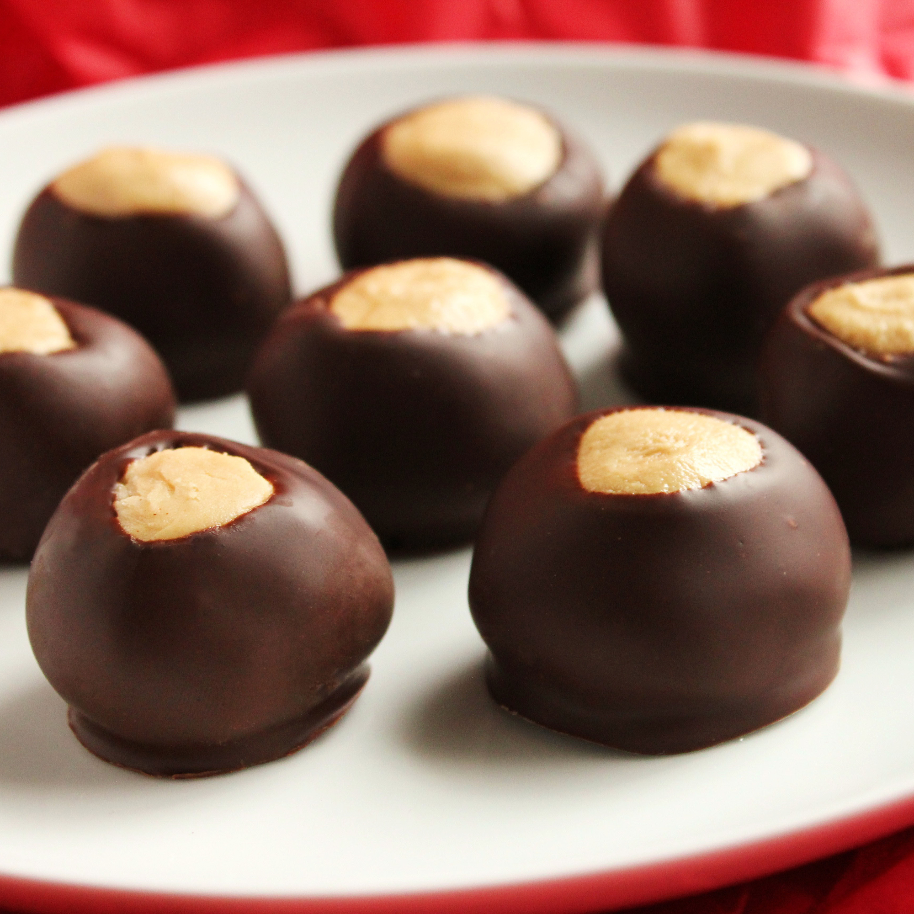

Buckeye Balls

Description
Buckeye Balls are sweet peanut butter candies dipped in chocolate
Ingredients
- 4 cups sifted confectioners' sugar
- 1 1/2 cups creamy peanut butter
- 1/2 cup unsalted butter, softened
- 1 teaspoon vanilla extract
- 6 ounces semi-sweet chocolate chips
- 2 tablespoons shortening
Steps
- Line a baking sheet with waxed paper; set aside
- Combine confectioners' sugar, peanut butter, and vanilla in a large bowl; mix together with your hands to form a smooth stiff dough. Shape into balls using 2 teaspoons of dough for each ball. Place on the prepared baking sheet and refridgerate until ready to coat with chocolate.
- Combine chocolate chips and shortening ina metal bowl over a pot of simmering water. Stir occassionally until melted and smooth. Remove from the heat.
- Remove chilled peanut butter balls from the refridgerator
- Insert a wooden toothpick into a ball, and dip into the melted chocolate until coated. Return to the baking sheet, chocolate-side down, and remove the toothpick.
- Repeat step 5 to coat remaining balls. Refridgerate coated balls until set, about 30 mins.
Return Home